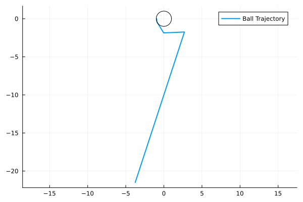

A Mechancal Example
A Mechanical system contains the data $(M, V, G, N, R, E)$
- .$M(q)$ is the mass matrix.
- .$V(q)$ is the potential energy.
- .$G(q)$ is the event location function.
- .$R(q) = dG(q)$ is the normal direction.
- .$E$ is the coefficient of restitution.
\[ H(x,y,p_x,p_y) = \frac{1}{2}(p_x^2+p_y^2) + y\]
\[ h(x,y) = 1 - (x^2+y^2) \geq 0.\]
import HybridDynamics as HD
import Plots as plt
using LaTeXStrings
M(q) = [1.0 0.0; 0.0 1.0]
V(q) = q[2]
h(q) = 1 - (q[1]^2+q[2]^2)
∇h(q) = [-2*q[1], -2*q[2]]
r = 0.60.6sysM = HD.MechanicalSystem(M, V; guard=h, normal=∇h, e=r)
probM = HD.prob(sysM, [-0.95, 0.0, 0.2, -1.5], (0.0, 10.0))
solM = HD.solve(probM, HD.RK45())HybridDynamics.MechanicalSol{Vector{Float64}, Vector{Vector{Float64}}, Vector{Vector{Float64}}, prob{MechanicalSystem{typeof(Main.M), typeof(Main.V), typeof(Main.h), typeof(Main.∇h), HybridDynamics.var"#MechanicalSystem##2#MechanicalSystem##3", Float64}, Vector{Float64}, Tuple{Float64, Float64}}, Vector{Float64}, Vector{Int64}, Vector{Float64}}([0.0, 0.01, 0.04, 0.13, 0.27190352807550966, 1.0819035280755096, 1.0819035280755096, 3.5119035280755098, 3.5119035280755098, 10.0], [[-0.95, 0.0, 0.2, -1.5], [-0.948, -0.015049999999999997, 0.2, -1.51], [-0.942, -0.06079999999999999, 0.2, -1.54], [-0.9239999999999999, -0.20345, 0.2, -1.6300000000000001], [-0.895619294384898, -0.4448210564032193, 1.0727721572314926, -1.3384298016685103], [-0.02667384702738895, -1.8569991957547125, 1.0727721572314926, -2.1484298016685104], [-0.02667384702738895, -1.8569991957547125, 1.1217838122371067, 1.2636990837741555], [2.6992608167087804, -1.7386604221835138, 1.1217838122371067, -1.1663009162258442], [2.6992608167087804, -1.7386604221835138, -0.9962813859704753, 0.19799708303826802], [-3.764708928650302, -21.50173416077109, -0.9962813859704753, -6.290099388886221]], [[0.2, -1.51, 0.0, -1.0], [0.2, -1.54, 0.0, -1.0], [0.2, -1.6300000000000001, 0.0, -1.0], [1.0727721572314926, -1.3384298016685103, 0.0, -1.0], [1.0727721572314926, -2.1484298016685104, 0.0, -1.0], [1.1217838122371067, 1.2636990837741555, 0.0, -1.0], [1.1217838122371067, -1.1663009162258442, -0.0, -1.0], [-0.9962813859704753, 0.19799708303826802, -0.0, -1.0], [-0.9962813859704753, -6.290099388886221, 0.0, -1.0]], prob{MechanicalSystem{typeof(Main.M), typeof(Main.V), typeof(Main.h), typeof(Main.∇h), HybridDynamics.var"#MechanicalSystem##2#MechanicalSystem##3", Float64}, Vector{Float64}, Tuple{Float64, Float64}}(MechanicalSystem{typeof(Main.M), typeof(Main.V), typeof(Main.h), typeof(Main.∇h), HybridDynamics.var"#MechanicalSystem##2#MechanicalSystem##3", Float64}(Main.M, Main.V, Main.h, Main.∇h, HybridDynamics.var"#MechanicalSystem##2#MechanicalSystem##3"(), 0.6, -1), [-0.95, 0.0, 0.2, -1.5], (0.0, 10.0)), [0.27190352807550966], Int64[], Float64[])xm = getindex.(solM.x, 1)
ym = getindex.(solM.x, 2)
plt.plot(xm, ym, label="Ball Trajectory", lw=2)
θ = LinRange(0, 2π, 100)
plt.plot!(cos.(θ), sin.(θ), label="", lc=:black, aspect_ratio=1)